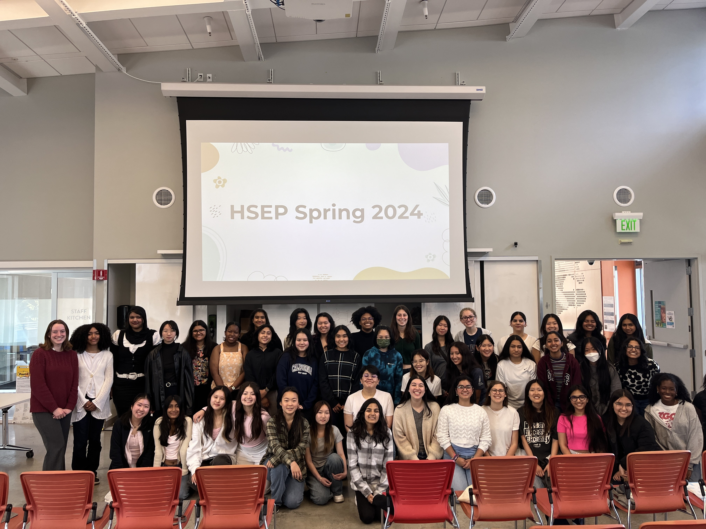
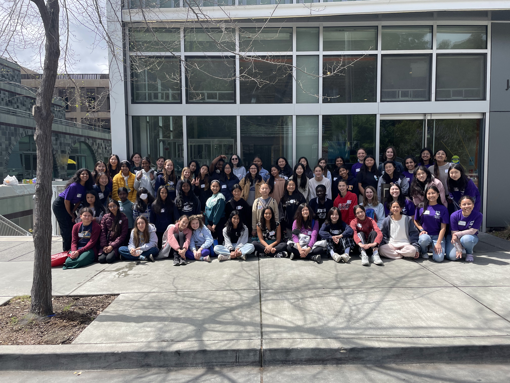

Semester-Long Programs

Learn More →
High School Engineering Program
The High School Engineering Program (HSEP) is a 10-week long program that aims to foster a nurturing environment for female-identifying and nonbinary high school students to learn and explore their interests in engineering. In the first half of the program, students gain exposure to different engineering disciplines through talks from UC Berkeley professors and hands-on demos led by engineering student organizations. During the latter half of the program, students are divided into small groups and paired with an undergraduate mentor to brainstorm, design, and build a technical, community-oriented engineering project of their choosing. The program culminates in a Final Showcase where each project mentor group has the opportunity to present their projects to family, friends, and community members.
Learn More →

SWE++
SWE++ is a 10-week long program for female and nonbinary middle school students to gain introductory programming skills. Lessons are taught in both Scratch and Python and are completely created and taught by volunteers. After learning the fundamentals of computer science, students have an opportunity to showcase their new coding superpowers in a final project.
Learn More →
SWENext
SWENext is a national outreach program that aims to support high school students through every step of the way of their STEM journey to college. The program consists of the following key components: reaching out to local high schools to establish new SWENext clubs and supporting their growth and development, partnering with high schools to host a mentorship program between UC Berkeley undergraduates and high school students. The mentorship program runs for one semester, but often continues beyond that. We also financially supporting SWENext clubs with small scholarships so students can host workshops, hackathons, or other events at their school.
Learn More →
SWE Science
SWE Science hosts monthly “SWE Science Saturdays” that teach engineering ideas and principles to 4th-5th grade students and 6th-8th grade students. Students of all genders have the opportunity to participate in various hands-on STEM activities/experiments, learning and practicing foundational STEM principles!
Learn More →
One-Day Events
Mini University
Mini-University is a one-day event for students from local, underserved high schools to learn more about STEM and engineering careers. The event provides participants the opportunity to interact with current engineering/STEM students and Berkeley engineering faculty, engage in hands-on engineering activities, and tour academic labs. The goal of Mini-U is to provide students who typically would not have access to robust STEM resources in their community the opportunity to learn about various STEM career options, as well as a potential pathway to college.
Learn More →Engineering Day
Usually held in late October, Engineering Day is a Halloween-themed science carnival for K-3 students where they have the opportunity to participate in hands-on science activities to gain a fun, high-level exposure to basic STEM concepts.
Learn More →

Learn More →
Tech Day
Tech Day is a day-long conference for middle school girls and nonbinary students to gain more exposure to Computer Science and technology. The day will be filled with hands-on workshops in both hardware and software, engaging STEM and career panels, as well as ample opportunities for students to bond with each other as well as get to know current UC Berkeley STEM students.
Learn More →
Overnight Host Program
OHP offers female and non-binary identifying admits to the College of Engineering and Chemical Engineering major a taste of the Berkeley Engineering experience through campus and lab tours, professor panels, undergraduate student shadowing, peer advising, our Pen Pal program, and more!
Learn More →